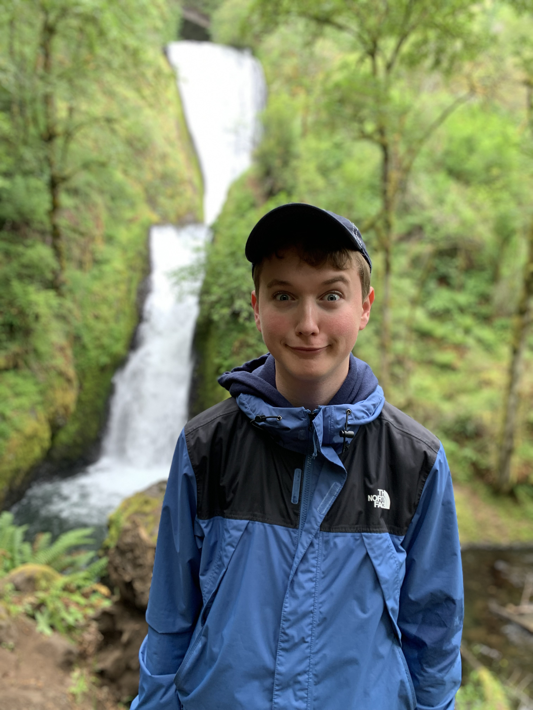

About
My name is Andrew Miles and I am currently learning how to design websites using HTML and CSS for my Work-Based Learning Class this semester. This is currently a work in progress website so some features may be missing until I learn how to add them. My current plan is to first learn how to complete this portfolio and then make a website for my school's Interact Club and an AI generated website. For this portfolio, I may use some AI assistance but I will make sure to cite any changes made by AI with the rest being made by me. Besides HTML/CSS, I also know Java and a little Python and C#. I hope to possibly put those skills to good use in this course as well but we'll see as the semester progresses. My main focus is learning how to make websites in HTML and CSS and experimenting with AI as a resource.
Projects
- Learning Implementation (this website & Whac-A-Mole)
- Interact Club Website
- AI-Generated Website
- Tyler Simmons Collaboration Website (maybe)
*I'll eventually make links to these projects once I finish them.